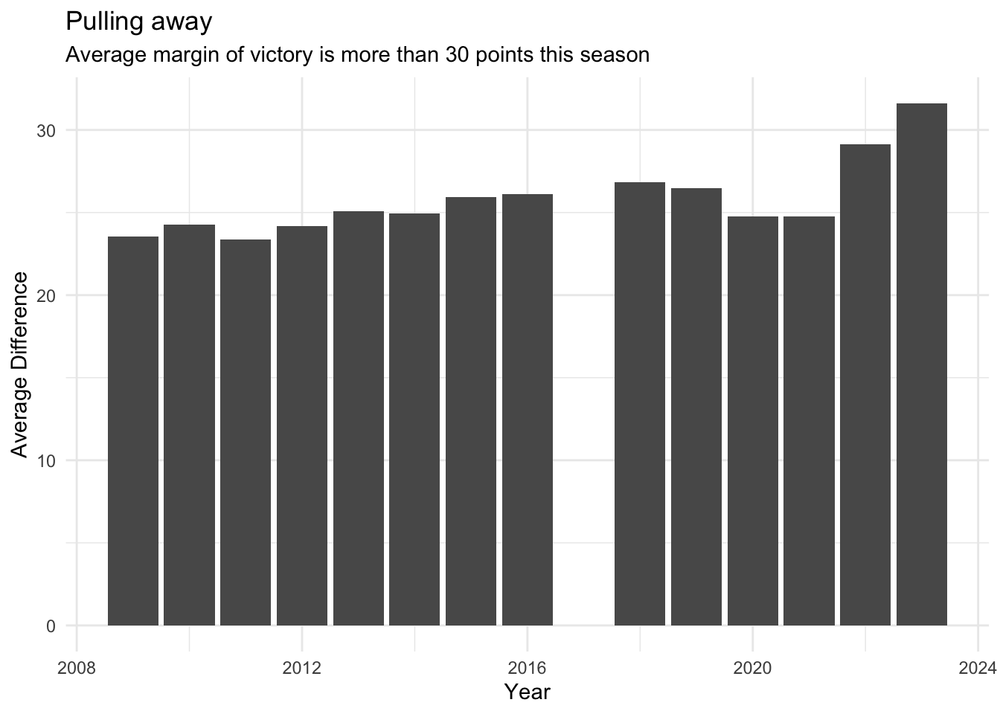

library(tidyverse)games <- read_csv("scores.csv")
wv_games <- games |> filter(home_team_state == 'WV', visiting_team_state == 'WV')Calculate the average differential by year for WV games
wv_by_year <- wv_games |>
group_by(year) |>
summarise(
min_diff = min(differential),
max_diff = max(differential),
avg_diff = mean(differential),
median_diff = median(differential)
)Make a bar chart of average differential
ggplot() +
geom_bar(data=wv_by_year, aes(x=year, weight=avg_diff)) +
labs(
title="Pulling away",
subtitle = "Average margin of victory is more than 30 points this season",
x="Year",
y="Average Difference"
) + theme_minimal()
Are there more 35+ margin games?
all_games <- wv_games |>
group_by(year) |>
summarise(all_games = n())
thirtyfive_plus <- wv_games |>
filter(differential >= 35) |>
group_by(year) |>
summarise(thirtyfive_plus_games = n())
thirtyfive_with_pct <- all_games |>
inner_join(thirtyfive_plus) |>
mutate(pct = thirtyfive_plus_games/all_games *100) |>
arrange(desc(pct))Joining with `by = join_by(year)`all_games |>
inner_join(thirtyfive_plus) |>
mutate(pct = thirtyfive_plus_games/all_games *100) |>
arrange(desc(pct))Joining with `by = join_by(year)`# A tibble: 14 × 4
year all_games thirtyfive_plus_games pct
<dbl> <int> <int> <dbl>
1 2023 499 227 45.5
2 2022 540 217 40.2
3 2016 518 169 32.6
4 2019 545 176 32.3
5 2018 558 171 30.6
6 2015 516 155 30.0
7 2021 545 163 29.9
8 2020 444 125 28.2
9 2014 516 144 27.9
10 2013 524 146 27.9
11 2012 511 131 25.6
12 2010 529 129 24.4
13 2011 512 123 24.0
14 2009 539 127 23.6ggplot() +
geom_bar(data=thirtyfive_with_pct, aes(x=year, weight=pct)) +
labs(
title="West Virginia High School Football's Lopsided Games",
subtitle = "More than 45 percent of games this season have a margin of 35 or more points, a modern high.",
x="Year",
y="Percent"
) + theme_minimal()Teams with largest average margins in 2023
home_margins <- wv_games |>
mutate(home_team_margin = home_team_score - visiting_team_score) |>
group_by(year, home_team) |>
summarize(home_games = n(), home_margin = sum(home_team_margin))`summarise()` has grouped output by 'year'. You can override using the
`.groups` argument.visiting_margins <- wv_games |>
mutate(visiting_team_margin = visiting_team_score - home_team_score) |>
group_by(year, visiting_team) |>
summarize(visiting_games = n(), visiting_margin = sum(visiting_team_margin))`summarise()` has grouped output by 'year'. You can override using the
`.groups` argument.team_margins <- home_margins |> left_join(visiting_margins, join_by(home_team == visiting_team, year == year)) |>
mutate(home_games = replace_na(home_games, 0)) |>
mutate(visiting_games = replace_na(visiting_games, 0)) |>
mutate(home_margin = replace_na(home_margin, 0)) |>
mutate(visiting_margin = replace_na(visiting_margin, 0)) |>
mutate(total_games = home_games + visiting_games, total_margin = home_margin + visiting_margin) |>
rename(team = home_team) |>
group_by(team, year) |>
summarize(avg_margin = total_margin/total_games) |>
arrange(desc(avg_margin))`summarise()` has grouped output by 'team'. You can override using the
`.groups` argument.There are more teams with average margins of 35 points or more this season than any recent year
team_margins |>
filter(avg_margin >= 35) |>
group_by(year) |>
summarise(teams = n()) |>
arrange(desc(teams))# A tibble: 14 × 2
year teams
<dbl> <int>
1 2023 7
2 2010 5
3 2015 5
4 2009 4
5 2016 4
6 2022 4
7 2013 3
8 2014 3
9 2019 3
10 2021 3
11 2011 2
12 2012 2
13 2018 2
14 2020 2Teams with the largest average margin of victory in 2023
team_margins |>
filter(avg_margin >= 35, year == 2023)# A tibble: 7 × 3
# Groups: team [7]
team year avg_margin
<chr> <dbl> <dbl>
1 Huntington 2023 46.3
2 Williamstown 2023 44.3
3 Greenbrier West 2023 42.6
4 Cameron 2023 42
5 Martinsburg 2023 41.2
6 Wahama 2023 38.3
7 Hurricane 2023 35.4Runaway Games - 49+ point margins
wv_games |>
filter(differential >= 49) |>
group_by(year) |>
summarise(games = n()) |>
arrange(desc(games))# A tibble: 14 × 2
year games
<dbl> <int>
1 2023 85
2 2022 73
3 2015 54
4 2021 53
5 2016 50
6 2013 49
7 2018 48
8 2019 48
9 2014 44
10 2020 40
11 2010 38
12 2009 37
13 2012 35
14 2011 34Runaway Games - 70+ point margins
wv_games |>
filter(differential >= 70) |>
group_by(year) |>
summarise(games = n()) |>
arrange(desc(games))# A tibble: 13 × 2
year games
<dbl> <int>
1 2023 13
2 2014 5
3 2018 5
4 2013 4
5 2019 4
6 2020 4
7 2021 4
8 2015 3
9 2009 2
10 2012 2
11 2010 1
12 2011 1
13 2022 1